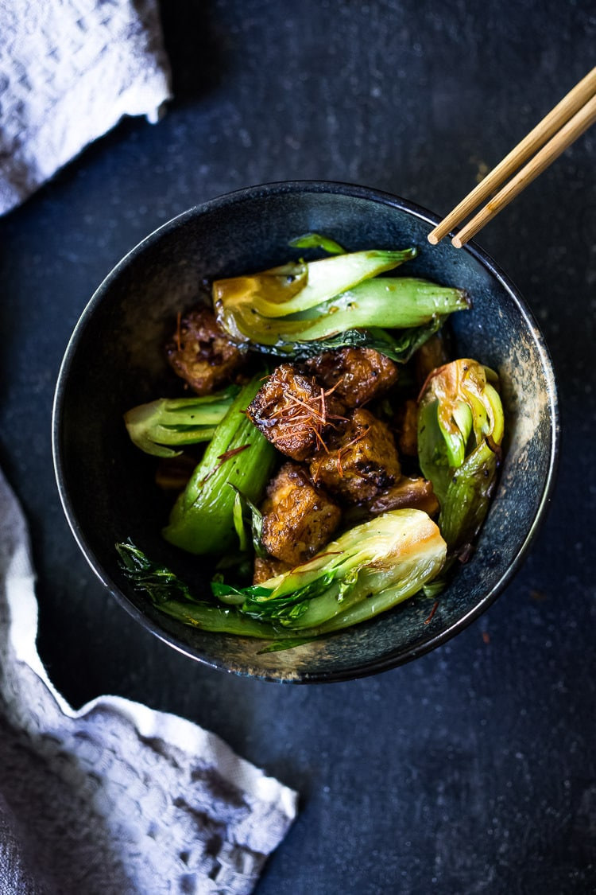
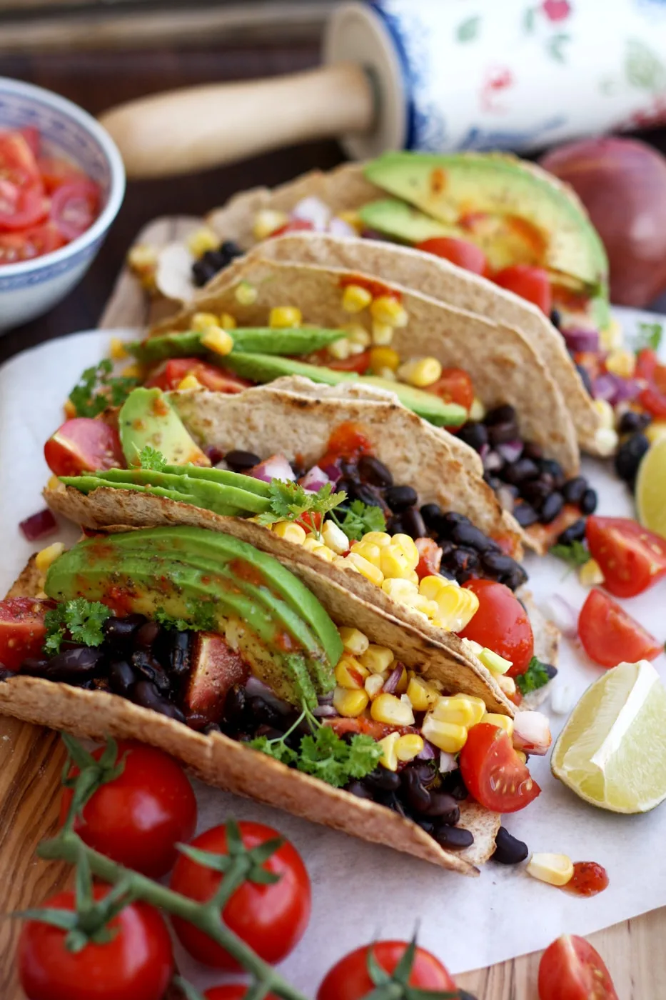
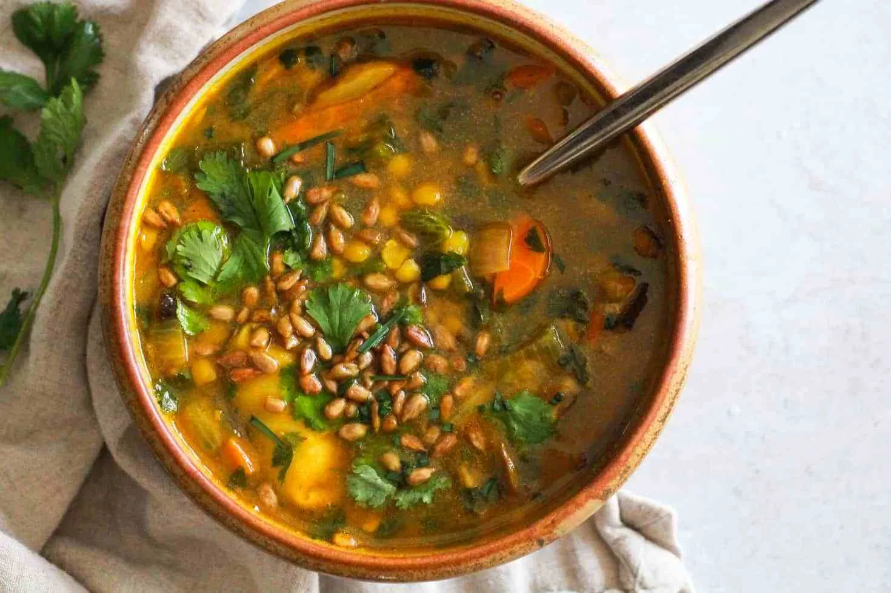

Black Pepper Tofu with Bok Choy

Stir-frys, of any kind, are my go-to dish to make in my dorm. They are so quick and easy and you can practically thow in any vegetables or protein you have lying around. Serve it over rice or noodles and in 20-minutes, you'll have a healthy and flavor-packed meal.
Ingredients:
- 8-12 oz firm tofu, patted dry, cut into 1-inch cubes
- 2 tablespoon wok oil (high heat oil like peanut, or coconut
- 5-finger pinch of salt
- 1 teaspoon pepper
- 1 shallot, sliced
- 4 cloves garlic, rough chopped
- 6 oz baby bok choy (about 4) quartred lengthwise
Black Pepper Sauce (not very easy to do in the dorm but if you have the luxury of an actual kitchen!):
2 tablespoons soy sauce
2 tablespoons Chinese Cooking Wine ( Shaoxing Rice Wine) or sub dry white wine, pale sherry, or rice wine
2 tablespoons water
1 teaspoon brown sugar
1/2 teaspoon pepper
1 teaspoon
1 teaspoon chili paste (optional)
Directions:
Cut tofu into cubes and blot dry with paper towels, pressing down gently. Make the wok sauce, stirring ingredients together in a small until most of the sugar dissolves.
Then, prep the shallots, garlic and bok choy. Heat oil in a wok or large cast iron skillet over medium-high heat and add the salt and crushed peppercorns to the oil, swirling it around for about one minute.
Add the tofu to the seasoned oil, and sear on all sides until golden and crispy, turning the heat down if needed. It will probably take about 5-6 minutes.
Set the tofu aside and then heat another teaspoon or two of oil over medium heat, and add shallots, garlic and bok choy. Stir continuously until bok choy begins to wilt and shallots become golden, about 3-4 minutes. Add the wok sauce to the pan and simmer for a couple of minutes, or until bok choy is just tender.
At the end, toss the tofu back into the pan with the bok choy and sauce ( just long enough to coat, only 5-10 seconds!) Taste for salt and heat, adjusting to your preference, and enjoy!
5-minute Easy Vegan Tacos

Yes, delicious and healthy can take only 5-minutes, and here's proof!
Ingredients:
- 4 whole what tortiallas (or any desired tortilla/taco)
- 1 canned corn
- 1 cup cooked black beans
- 1 avocado, sliced
- 3/4 cup quartered cherry tomatoes
- 1/2 red onion, chopped
- 2 tablespoons frech chopped parsley
- 1 teaspoon ground cumin
- 4 lime wedges
- salt and pepper, to taste
- hot chili sauce, to taste
All you have to do is sssemble your tacos!
Distribute corn, black beans, avocado slices, quartered cherry tomatoes, chopped onion and parsley among tortillas. Season with ground cumin, lime juice, salt and freshly ground black pepper. Drizzle with your favorite hot chili sauce. Enjoy!
One-Pot Yellow Split Pea Soup

I LOVE any soup, especially as a student in one of the snowiest citys in the U.S. This Indian-inspired soup is protein-rich and full of flavor with an extra kick of spice.
Ingredients:
- 2 tablespoons oil or as needed to coat the pot
- 2 medium carrots, diced
- 1/2 red onion, diced
- 4 cloves garlic, minced
- 2-inch piece if ginger, grated
- 2 cups sliced mushrooms
- 4 cups vegetable broth
- 2 cups water
- 2 cups dry yellow split peas, rinsed
- 1 tablespoon coriander
- 1 tablespoon turmeric
- Salt and pepper to taste
Optional for serving:
- Cilantro leaves
- Chopped fresh chives
- Sunflower seeds, toasted if desired
Directions:
Add oil to a 12-quart stockpot over medium heat. Stir in red onion and carrots and cook for 4 minutes, or until onion is translucent. Stir in garlic, ginger, and mushrooms and cook for another 4 minutes, or until the mushrooms darken in color. Add more oil to prevent the vegetables from sticking as needed.
Then, stir in vegetable broth, water, yellow split peas, coriander, and turmeric. Increase heat to high and bring to a boil, then reduce heat to low-medium and cook for 25 minutes, or until peas are tender.
Next, chop green carrot tops and stir them into the pot during the final 5 minutes of cooking if desired. Taste and season with salt and pepper.
Divide soup between bowls and garnish with cilantro, chives, and sunflower seeds if desired.